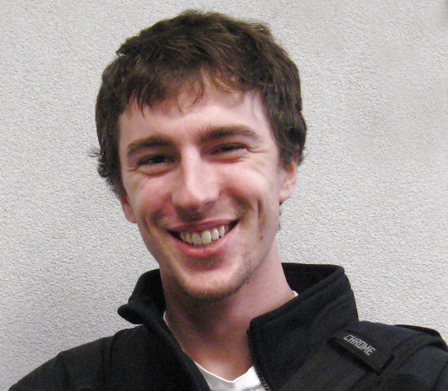

Data Science | Nuclear Astrophysics

I am a data scientist at White Ops on the Detection team, working to identify fraudulent activity across the internet and developing new ways to track and counteract that activity. I have previously worked on building search ranking models and integrating ideas from recommender systems into the framework while at Gartner, analyzing passenger flow through New York's subway system as a fellow at Insight Data Science, and commissioning a next-generation recoil mass separator for nuclear astrophysics experiments while a graduate student in the Physics Department at the University of Notre Dame. My work has spanned multiple areas of interest, where I've sought out ways that my varied skills and expertise can most benefit. That mindset also initially attracted me to the Lyman Briggs College at Michigan State University, where the multi-disciplinary approach to learning the sciences and coupling that with their impact on humanity has had a profound impact on my life and career.
I've used Python for data analysis and side projects since 2007, but have worked in most other languages, especially C++ (extended by ROOT for nuclear physics analysis), Java, shell scripting, Fortran, and some domain-specific languages based on the above.
While programming itself has been extremely rewarding, I would not feel right without helping others in their own journey to learn. I taught a summer course on using Python for data analysis to undergraduate students with a focus on practical applications of Python (see the 2016 course information for additional details) and tutored or guided multiple graduate and undergraduate students on their own journey with Python.
Unfortunately, my work for my employers cannot be shared here. Below are mostly projects that I worked on during my time in graduate school in support of my dissertation work, or side projects I created while avoiding said dissertation work.